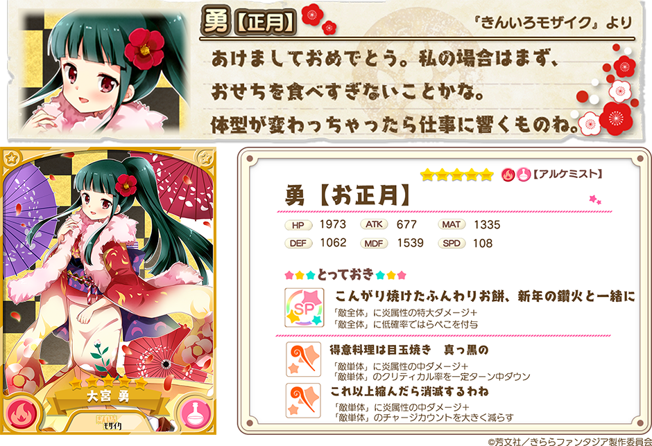
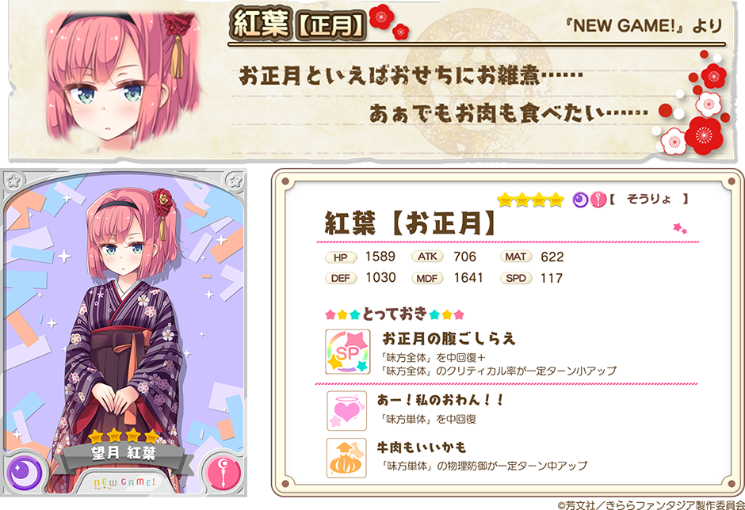
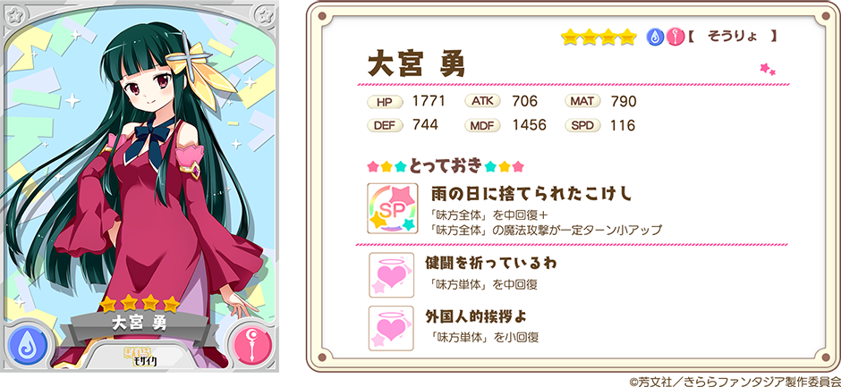

『きららファンタジア』をご利用いただき、誠にありがとうございます。
12/30より、新イベント「きんいろNEW YEAR!」で活躍するキャラクターが登場する「期間限定ピックアップ召喚」を開催いたします。
お正月衣装の「きんいろモザイク」勇（CV.田村ゆかり）、「NEW GAME!」紅葉（CV.鈴木亜理沙）が期間限定で登場します。
2017年12月30日 17:30 ～ 2018年1月10日 13:59
※期間限定キャラクターはこの期間中のみ召喚から登場いたします。
・10回召喚では★4以上のキャラクターが1体以上確定します。
・初回のみ星彩石300個で10回召喚が可能です。
・期間中、下記ピックアップ対象キャラクターの提供割合がアップしています。


※表示されているキャラクターイラストは進化前のものです。
※表示されているステータスは、進化前キャラクターの最大Lv（限界突破4回）時のものです。
また、勇【正月】の登場を記念して、召喚に★4勇（そうりょ）が追加されております。

※★4勇（そうりょ）はピックアップ対象ではありません。
※★4勇（そうりょ）は期間限定ピックアップ召喚期間終了後も召喚から登場します。
※表示されているキャラクターイラストは進化前のものです。
・提供割合の詳細はゲーム内の召喚画面＞提供割合からご確認ください。
・ピックアップ対象のキャラクターは同一レアリティの他のキャラクターよりも提供割合が高く設定されています。
・期間限定ピックアップ召喚終了後、今回登場した期間限定キャラクターが今後の更新において再登場する可能性がございます。
・キャンペーン内容は予告なく変更になる場合がございます。ご了承ください。
今後とも『きららファンタジア』をよろしくお願いいたします。